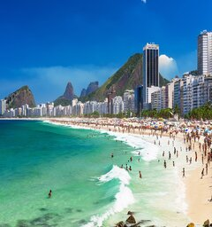
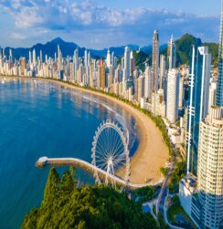
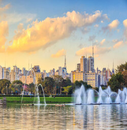
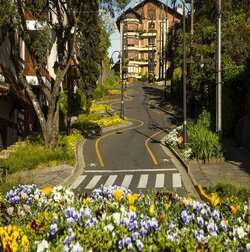
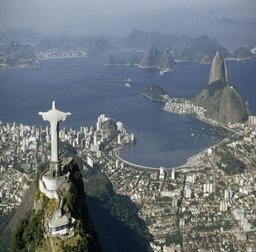
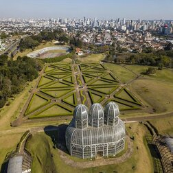

-
Praia de Copacabana, RJ
A Praia de Copacabana é uma praia localizada no bairro de Copacabana, na Zona Sul da cidade do Rio de Janeiro, no Brasil. É considerada uma das praias mais famosas do mundo.
-
Balneário Camboriú, SC
Balneário Camboriú é uma cidade turística no estado de Santa Catarina, no sul do Brasil. É conhecida pelos grandes edifícios e por praias como a Praia Central. Bares, restaurantes e lojas preenchem a Avenida Atlântica, uma avenida movimentada junto à praia.
-
Parque Ibirapuera, SP
Quem decide dar um passeio pelo Parque Ibirapuera não sente falta de diversão, pois além de grandes opções culturais, o parque também é o lugar perfeito para se praticar atividades físicas, além de ele ser bem localizado e muito bem cuidado pelos seus administradores.
-
Gramado, RS
Gramado é uma cidade com uma estância de montanha situada no estado mais a sul do Brasil, Rio Grande do Sul. Influenciada pelos colonos alemães do século XIX, a cidade possui um toque bávaro com chalés alpinos, chocolateiros e lojas de artesanato.
-
Cristo Redentor, RJ
Cristo Redentor é uma estátua que retrata Jesus Cristo localizada no topo do morro do Corcovado, a 709 metros acima do nível do mar, com vista para parte considerável da cidade brasileira do Rio de Janeiro.
-
Jardim Botânico, PR
O residencial Jardim Botânico se espalha pelo Jardim Botânico de Curitiba, com uma estufa tropical de 3 cúpulas, uma área arborizada com trilhas e um jardim sensorial. O time de futebol local do Paraná Clube joga no Estádio Vila Capanema.